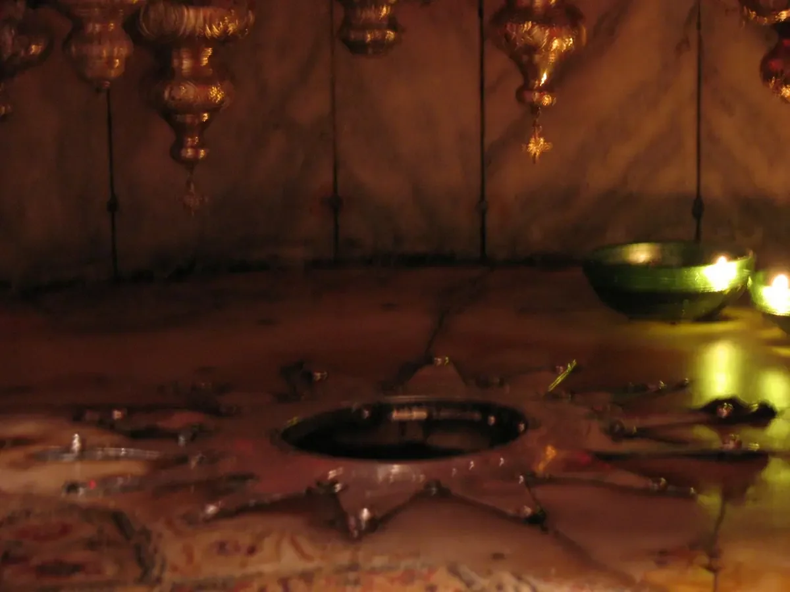
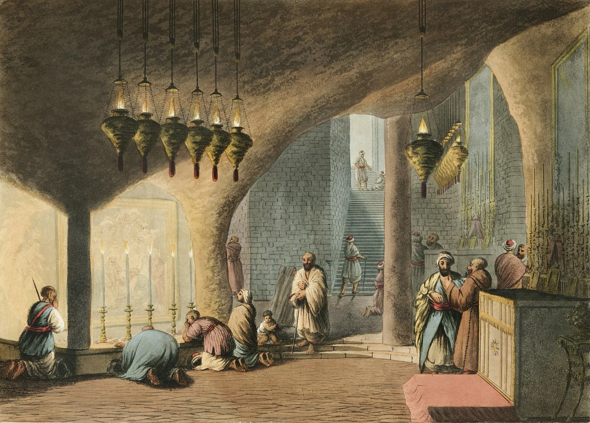
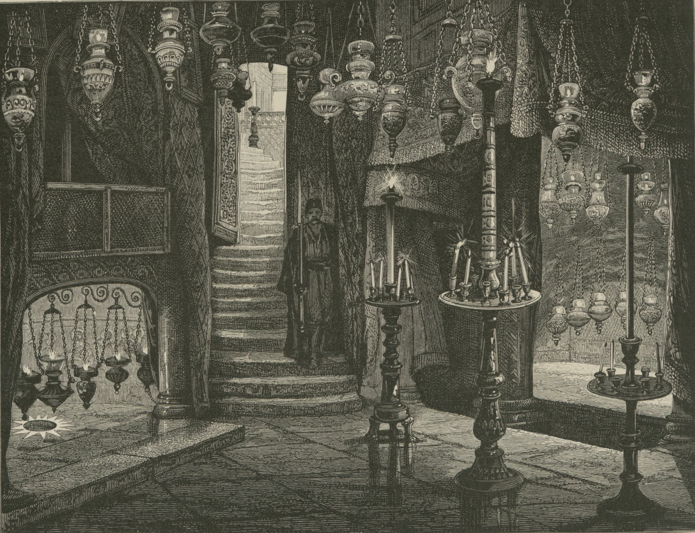

아직 펼치지 않은 카드베들레헴, 그 밤의 자리 · 2탄생 동굴의 은빛 별동굴 바닥에 박힌 은빛 별, 무엇을 표시하는 걸까요?바닥에 반짝이는 별이 있어. 왜 여기에 별을 붙였을까?
2세기부터 전해진 동굴 · 지금의 별은 1853년팔레스타인 베들레헴 · 예수탄생교회 아래
탄생 동굴의 은빛 별
예수탄생교회 제단 아래에는 길이 12m쯤 되는 동굴이 있어요. 그 한쪽 끝, 등잔이 매달린 낮은 벽감 바닥에 은빛 별이 박혀 있어요. 어두운 동굴을 등불로 비추며 별에 새긴 것들을 찾아보세요.
교회 아래 동굴로 내려가면 바닥에 은빛 별이 있어. 깜깜하니까 등불을 들고 같이 찾아보자!
검수 전 시안이에요(기준서 1판). 장면에는 기록에 있는 것만 옮겼고, 전해지는 이야기는 그렇다고 밝혔어요. 상상은 ‘눈 감고 상상해 보기’에만 썼어요.
시안 확인용카드 단계 미리 보기
1
동굴의 오래된 기억
1700년대 끝 무렵 화가 루이지 마이어(1755~1803)가 그린 탄생 동굴이에요. 낮은 바위 천장에 등잔이 줄지어 매달려 있고, 왼쪽 환한 벽감 앞에 사람들이 무릎을 꿇거나 엎드려 있어요.
이 동굴을 예수가 태어난 곳으로 기억한 기록은 아주 오래되었어요. 2세기 중반 순교자 유스티노는, 요셉이 마을에서 묵을 곳을 찾지 못해 마을 가까운 동굴에 머물렀고 거기서 마리아가 아기를 낳았다고 썼어요.

3세기 학자 오리게네스는, 베들레헴에서는 그분이 태어난 동굴과 동굴 속 구유를 보여 준다고 적었어요. 신앙을 반대하는 사람들 사이에서도 널리 이야기된다고 덧붙였어요.
339년, 이 동굴 위에 첫 교회가 봉헌되었어요. 지금 동굴은 길이 12m쯤, 너비 3m쯤의 길쭉한 방이에요.
아주 옛날에 그린 동굴 그림이야. 천장에 등잔이 주렁주렁 매달려 있지?
물어보기사람들은 왜 이 동굴에 와서 무릎을 꿇었을까?
2
등잔 아래의 별
계단을 내려가면 동굴 한쪽 끝, 제단 바로 아래에 반원 모양의 낮은 벽감이 있어요. 그 흰 대리석 바닥에 꼭짓점이 14개인 은빛 별이 박혀 있어요.
동굴은 등잔 불빛으로 밝혀요. 등불을 들고 바닥을 비추며 별에 새긴 것들을 찾아보세요.
손가락이나 마우스로 문질러 동굴 바닥을 비춰 보세요.

탄생 동굴의 은빛 별, 2008년 · 사진: Berthold Werner · 퍼블릭 도메인 · 위키미디어 공용
빛이 닿으면 숨은 표시가 나타나요.
등잔 아래 은빛 별을 다 비춰 보았어요. 이 별은 1847년에 한 번 사라진 적이 있어요.
깜깜한 동굴이야. 등불을 들고 바닥을 비춰 볼까?
물어보기별의 꼭짓점은 몇 개일까? 같이 세어 보자.
3
사라진 별, 다시 단 별
두 그림은 같은 자리를 그렸어요. 계단 왼쪽, 등잔이 매달린 벽감 바닥에 별이 있어요. 1839년 4월 6일 날짜가 적힌 데이비드 로버츠의 그림과, 1881년 책에 실린 판화예요. 아래 ‘1839년 · 1881년’ 단추를 눌러 두 그림을 견주어 보세요.
첫 별은 1717년 가톨릭 쪽이 놓았어요. 40년쯤 뒤부터 이 제단은 그리스 정교회 쪽이 맡게 되었어요. 1847년 가을 어느 아침, 기도하러 동굴에 내려온 가톨릭 성직자들이 별이 없어진 것을 알았어요.


가톨릭 쪽은 그리스 정교회 수도사들이 떼어 갔다고 했고, 정교회 쪽은 가톨릭이 꾸민 일이라고 맞섰어요. 별에 새긴 라틴어 글이 동굴의 주인을 가톨릭으로 보이게 했기 때문이에요. 다툼은 가톨릭 편의 프랑스와 정교회 편의 러시아로까지 번졌어요.
1852년 2월, 오스만 술탄은 칙령을 내려 베들레헴의 성당과 동굴을 ‘지금 모습대로’ 두라고 했어요. 1853년, 같은 라틴어 글과 ‘1717’을 새긴 새 별이 다시 바닥에 박혔어요. 성지를 둘러싼 이 다툼은 그해 10월 시작된 크림 전쟁의 여러 까닭 가운데 하나로 꼽혀요.
옛날 그림 두 장이야. 계단 왼쪽, 등잔 밑 바닥을 봐. 별이 있던 자리야.
물어보기별이 없어졌을 때, 사람들은 왜 그렇게 다투었을까?
4
지금 모습 그대로
오늘 이 동굴은 그리스 정교회가 돌보고, 별 위의 등잔 15개는 세 교회가 나누어 맡아요. 그리스 정교회가 6개, 아르메니아 사도교회가 5개, 가톨릭이 4개예요.
별 가까이, 조금 낮은 자리에는 구유 자리가 있어요. 그 맞은편 동방박사 경배 제단에서는 가톨릭이 미사를 드려요.

“이 모든 곳은 지금 모습대로 두어야 한다.”
오스만 술탄의 칙령, 1852년 2월 8일(영어 번역에서 옮김)
누가 어디를 맡는지는 이 칙령에서 이어진 ‘현상 유지(Status Quo)’ 약속으로 정해져 있어요.
등잔 아래 별 둘레에는 지금도 그 라틴어 글이 새겨져 있어요. “여기서 동정녀 마리아에게서 예수 그리스도께서 나셨다.”
동굴에 내려왔어요. 무엇부터 해 볼까요?
지금도 별 위에 등잔이 반짝여. 가까이에는 아기 예수를 뉘었다는 구유 자리도 있어.
물어보기이 동굴에 간다면 무엇부터 보고 싶어?
눈 감고 상상해 보기
좁은 계단을 다 내려오면 공기가 따뜻하고, 기름 등잔 냄새가 나요. 낮은 천장 아래 사람들이 조용히 줄을 서 있어요. 내 차례가 되어 무릎을 꿇으면, 흔들리는 등잔 불빛에 은빛 별이 반짝여요. 누군가 아주 작은 소리로 노래를 불러요.
눈을 감아 봐. 계단을 내려가면 따뜻하고 조용한 동굴이야. 등잔 불빛 아래에서 은빛 별이 반짝반짝해. 누가 작은 목소리로 노래를 불러.
나의 자리
내 삶에서 ‘여기서 무언가가 시작됐다’고 표시하고 싶은 자리는 어디인가요?
네가 태어난 곳은 어디야? 거기에 별을 붙인다면 어떤 별일까?
마음에 닿는 한 줄을 고르거나 직접 써 보세요. 한 줄을 남기면 이 자리의 도장이 찍혀요. 이 기기에만 저장돼요.
더 깊이
궁금한 칸만 펼쳐 읽어도 괜찮아요.
알고 보면
내려가고 올라오는 길 동굴로 가는 계단은 큰 제단 양옆에 하나씩 있어요. 순례자들은 남쪽 계단으로 내려가 북쪽 계단으로 올라와요. 별이 있는 벽감은 큰 제단 바로 아래예요.
‘구유’와 ‘동굴’ 누가복음은 아기를 구유에 뉘었다고 적었어요. ‘동굴’은 2세기 유스티노의 글부터 보여요. 3세기의 오리게네스는 그 동굴이 신앙을 반대하는 사람들에게도 알려져 있었다고 썼어요.
열쇠 셋 1852년 칙령은 베들레헴 큰 성당의 두 문과 구유 자리의 열쇠를 그리스 정교회·가톨릭·아르메니아 사도교회가 하나씩 가져 온 일을 다시 확인했어요.
불을 막는 휘장 1869년 큰불이 난 뒤에는 동굴의 세 벽에 석면을 댄 무거운 가죽 휘장을 둘렀어요. 석면은 불에 잘 타지 않는 광물 섬유예요.
꼭짓점이 14개인 까닭 여러 풀이가 전해지지만, 별을 만든 이들이 남긴 설명은 이 안내서가 찾지 못했어요.
기록마다 다른 점
별이 사라진 달 1847년 10월로 적은 글(영어 위키백과 등)과 11월로 적은 글(타임스 오브 이스라엘, 2012)이 있어요.
누가 떼어 갔나 가톨릭 쪽은 그리스 정교회 수도사들을, 정교회 쪽은 가톨릭을 의심했어요. 론리 플래닛은 세 공동체가 서로를 탓했다고 적었어요. 누가 했는지 밝혀진 기록은 이 안내서가 찾지 못했어요.
새 별을 단 해 1853년(Fodor’s, 샬롱 교구 자료)으로 적은 곳이 많고, 1852년으로 적은 곳도 있어요(베들레헴시).
크림 전쟁과의 관계 브리태니커는 성지에서의 권리를 둘러싼 러시아와 프랑스의 다툼을 전쟁의 큰 까닭 가운데 하나로 보지만, 더 직접적인 까닭은 러시아가 오스만 제국에 한 요구로 봐요. 별 하나 때문에 전쟁이 났다고 말하기는 어려워요.
말씀과 함께 읽기
그리스도인들은 이 동굴을 성탄 이야기와 함께 읽어 왔어요. 말씀은 뜻만 옮기고, 본문은 대한성서공회 개역개정으로 이어 드려요.
누가복음 2장 6~7절 베들레헴에 있을 때 마리아가 첫아들을 낳아 강보로 싸서 구유에 뉘었다는 말씀이에요. 머물 곳이 없었다고 적혀 있어요.
미가 5장 2절 작은 고을 베들레헴에서 이스라엘을 다스릴 이가 나온다는 말씀이에요. 마태복음 2장이 이 말씀을 옮겨 적었어요.
직접 가 보기
확인한 날 · 2026년 11월 18일 · 바뀌기 쉬운 정보라 정기적으로 다시 확인해요
탄생 동굴은 예수탄생교회 안에 있어요. 제단 오른쪽(남쪽) 계단으로 내려가 왼쪽(북쪽) 계단으로 올라와요. 사람이 많은 때에는 동굴 앞에서 오래 줄을 설 수 있어요.
요르단강 서안 지역이라 떠나기 전에 외교부 해외안전여행 누리집에서 여행경보를 꼭 확인해요. 여는 시간은 바뀌기 쉬워서, 가기 전에 현지에서 다시 확인해 주세요.
별에 새긴 것 찾기 금박
‘등잔 아래의 별’에서 등불로 세 곳을 모두 찾으면 카드에 금박이 입혀져요.
등불로 별과 등잔 세 곳을 끝까지 비춰 보기
순례자처럼 동굴에서 할 일 고르기 채색
둘 가운데 하나만 해도 카드가 채색돼요.
동굴에서 무엇부터 할지 고르기
아이와 함께 ‘영화처럼 보기’를 끝까지 보기
근거 보기 (19)
- 순교자 유스티노, 『트리포와의 대화』 78장(New Advent 영어 번역) — 요셉이 마을 가까운 동굴에 머묾
- 오리게네스, 『켈수스 반박』 1권 51장(New Advent 영어 번역) — 베들레헴에서 보여 주는 동굴과 구유
- See the Holy Land: Grotto of the Nativity — 12m×3m, 칸막이 오른쪽 계단, 14꼭짓점 별과 라틴어 글, 조금 낮은 구유 자리와 동방박사 제단(가톨릭 미사), 1869년 불과 휘장, 그리스 정교회가 맡음
- Holy Land Photos: Grotto Star Detail — 글 끝의 ‘1717’, 가운데 구멍 속 바위
- 브리태니커: Church of the Nativity — 그리스 정교회가 맡은 동굴, 흰 대리석에 박힌 14꼭짓점 은빛 별, 세 공동체의 등잔
- Fodor’s: Church of the Nativity — 1717년 가톨릭이 놓은 별, 40년 뒤 그리스 정교회로, 1847년 사라짐, 1853년 새 별, 동굴 앞의 긴 줄
- 샬롱 교구 성탄 구유 자료: Grotte de la Nativité — 1717·1847·1853, 등잔 15개(6·4·5), 구유 맞은편 동방박사 제단
- 론리 플래닛: Church of the Nativity — 1847년 별 도난과 서로를 탓한 세 공동체, 등잔 6·5·4
- The Times of Israel(2012, 슈무엘 바암): 1847년 11월 별이 사라진 아침, 서로를 의심한 두 교회, 라틴어 글과 동굴의 주인
- 오스만 술탄 칙령(1852년 2월 8일, 영어 번역 · 팔레스타인 문제 백과) — 베들레헴 큰 성당과 동굴, ‘지금 모습대로’, 세 공동체의 열쇠
- 성지 관구(Custodia Terrae Sanctae): Bethlehem and Status Quo — 1852년 현상 유지 규정과 세 공동체
- 브리태니커: Crimean War — 1853년 10월~1856년 2월, 성지 권리를 둘러싼 러시아와 프랑스의 다툼
- 베들레헴시: The Church of the Nativity — 별을 단 해를 1852년으로 적음
- Jewish Virtual Library: The Basilica of the Nativity — 성가대석 양옆의 동굴 계단
- 웨스트조지아 대학교 자료실 사진 설명 — 남쪽으로 들어가 북쪽으로 나옴
- 성 빈센트 드 폴 성당 순례기 — 줄을 서서 무릎 꿇고 별에 입 맞추는 순례자들
- 존 로이드 스티븐스, 『이집트·아라비아 페트라이아·성지 여행기』 2권(1837, 하이델베르크 대학 도서관 디지털) — 동굴 끝의 반원 벽감과 은빛 별
- Encircle Photos: 은빛 별 사진 설명 — 별 가까이의 구유 제단
- 클리블랜드 미술관: 데이비드 로버츠, 「Shrine of the Nativity, Bethlehem」(1839)
그림·사진·소리 출처
‘처음 만나는 기독교 문화’의 깊은 카드예요. 카드 단계와 남긴 글은 이 기기에만 저장돼요.